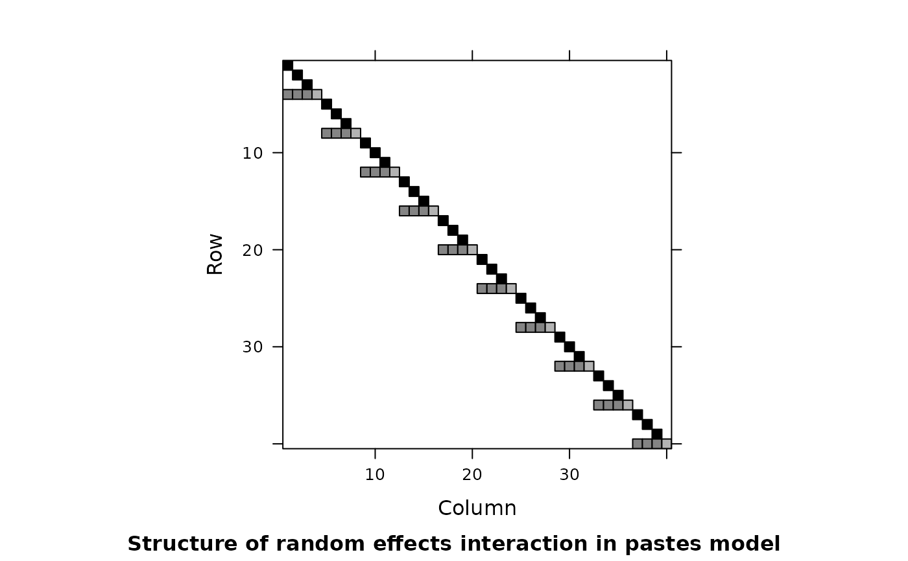

Paste strength by batch and cask
Pastes.RdStrength of a chemical paste product; its quality depending on the delivery batch, and the cask within the delivery.
Format
A data frame with 60 observations on the following 4 variables.
strengthpaste strength.
batchdelivery batch from which the sample was sample. A factor with 10 levels: ‘A’ to ‘J’.
caskcask within the delivery batch from which the sample was chosen. A factor with 3 levels: ‘a’ to ‘c’.
samplethe sample of paste whose strength was assayed, two assays per sample. A factor with 30 levels: ‘A:a’ to ‘J:c’.
Source
O.L. Davies and P.L. Goldsmith (eds), Statistical Methods in Research and Production, 4th ed., Oliver and Boyd, (1972), section 6.5
Details
The data are described in Davies and Goldsmith (1972) as coming from “ deliveries of a chemical paste product contained in casks where, in addition to sampling and testing errors, there are variations in quality between deliveries ... As a routine, three casks selected at random from each delivery were sampled and the samples were kept for reference. ... Ten of the delivery batches were sampled at random and two analytical tests carried out on each of the 30 samples”.
Examples
str(Pastes)
#> 'data.frame': 60 obs. of 4 variables:
#> $ strength: num 62.8 62.6 60.1 62.3 62.7 63.1 60 61.4 57.5 56.9 ...
#> $ batch : Factor w/ 10 levels "A","B","C","D",..: 1 1 1 1 1 1 2 2 2 2 ...
#> $ cask : Factor w/ 3 levels "a","b","c": 1 1 2 2 3 3 1 1 2 2 ...
#> $ sample : Factor w/ 30 levels "A:a","A:b","A:c",..: 1 1 2 2 3 3 4 4 5 5 ...
require(lattice)
dotplot(cask ~ strength | reorder(batch, strength), Pastes,
strip = FALSE, strip.left = TRUE, layout = c(1, 10),
ylab = "Cask within batch",
xlab = "Paste strength", jitter.y = TRUE)

## Modifying the factors to enhance the plot
Pastes <- within(Pastes, batch <- reorder(batch, strength))
Pastes <- within(Pastes, sample <- reorder(reorder(sample, strength),
as.numeric(batch)))
dotplot(sample ~ strength | batch, Pastes,
strip = FALSE, strip.left = TRUE, layout = c(1, 10),
scales = list(y = list(relation = "free")),
ylab = "Sample within batch",
xlab = "Paste strength", jitter.y = TRUE)

## Four equivalent models differing only in specification
(fm1 <- lmer(strength ~ (1|batch) + (1|sample), Pastes))
#> Linear mixed model fit by REML ['lmerMod']
#> Formula: strength ~ (1 | batch) + (1 | sample)
#> Data: Pastes
#> REML criterion at convergence: 246.9907
#> Random effects:
#> Groups Name Std.Dev.
#> sample (Intercept) 2.9041
#> batch (Intercept) 1.2874
#> Residual 0.8234
#> Number of obs: 60, groups: sample, 30; batch, 10
#> Fixed Effects:
#> (Intercept)
#> 60.05
(fm2 <- lmer(strength ~ (1|batch/cask), Pastes))
#> Linear mixed model fit by REML ['lmerMod']
#> Formula: strength ~ (1 | batch/cask)
#> Data: Pastes
#> REML criterion at convergence: 246.9907
#> Random effects:
#> Groups Name Std.Dev.
#> cask:batch (Intercept) 2.9041
#> batch (Intercept) 1.2874
#> Residual 0.8234
#> Number of obs: 60, groups: cask:batch, 30; batch, 10
#> Fixed Effects:
#> (Intercept)
#> 60.05
(fm3 <- lmer(strength ~ (1|batch) + (1|batch:cask), Pastes))
#> Linear mixed model fit by REML ['lmerMod']
#> Formula: strength ~ (1 | batch) + (1 | batch:cask)
#> Data: Pastes
#> REML criterion at convergence: 246.9907
#> Random effects:
#> Groups Name Std.Dev.
#> batch:cask (Intercept) 2.9041
#> batch (Intercept) 1.2874
#> Residual 0.8234
#> Number of obs: 60, groups: batch:cask, 30; batch, 10
#> Fixed Effects:
#> (Intercept)
#> 60.05
(fm4 <- lmer(strength ~ (1|batch/sample), Pastes))
#> Linear mixed model fit by REML ['lmerMod']
#> Formula: strength ~ (1 | batch/sample)
#> Data: Pastes
#> REML criterion at convergence: 246.9907
#> Random effects:
#> Groups Name Std.Dev.
#> sample:batch (Intercept) 2.9041
#> batch (Intercept) 1.2874
#> Residual 0.8234
#> Number of obs: 60, groups: sample:batch, 30; batch, 10
#> Fixed Effects:
#> (Intercept)
#> 60.05
## fm4 results in redundant labels on the sample:batch interaction
head(ranef(fm4)[[1]])
#> (Intercept)
#> E:b:E -3.9424485
#> E:a:E -3.3175663
#> E:c:E -0.3854267
#> J:c:J -1.7031213
#> J:a:J -0.6936962
#> J:b:J -0.3091533
## compare to fm1
head(ranef(fm1)[[1]])
#> (Intercept)
#> E:b -3.9424485
#> E:a -3.3175663
#> E:c -0.3854267
#> J:c -1.7031213
#> J:a -0.6936962
#> J:b -0.3091533
## This model is different and NOT appropriate for these data
(fm5 <- lmer(strength ~ (1|batch) + (1|cask), Pastes))
#> Linear mixed model fit by REML ['lmerMod']
#> Formula: strength ~ (1 | batch) + (1 | cask)
#> Data: Pastes
#> REML criterion at convergence: 301.4709
#> Random effects:
#> Groups Name Std.Dev.
#> batch (Intercept) 1.8341
#> cask (Intercept) 0.3856
#> Residual 2.7030
#> Number of obs: 60, groups: batch, 10; cask, 3
#> Fixed Effects:
#> (Intercept)
#> 60.05
L <- getME(fm1, "L")
Matrix::image(L, sub = "Structure of random effects interaction in pastes model")
